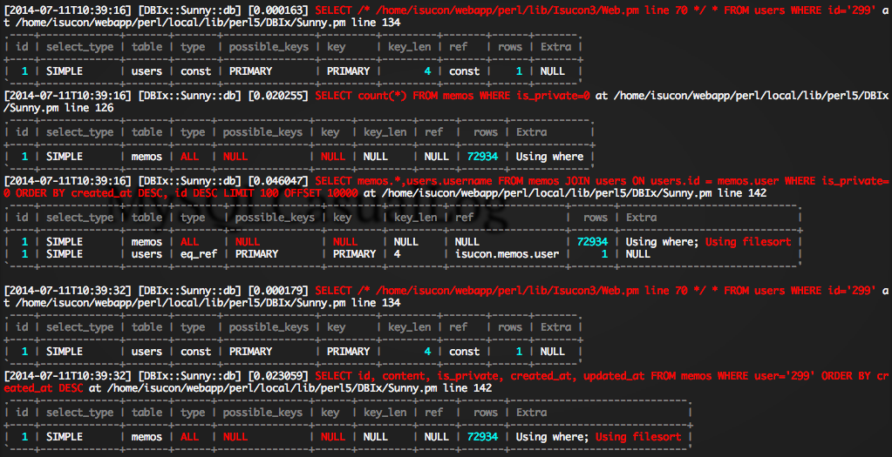
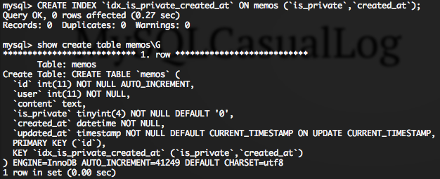
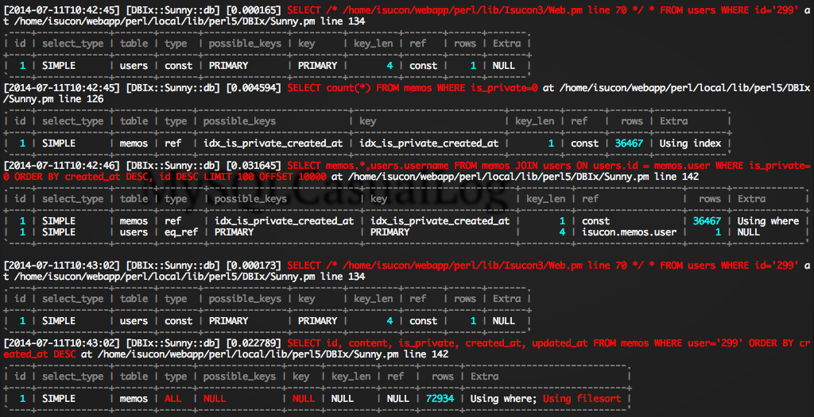

DBI で実際に発行されるクエリーを取得する DBIx::QueryLog を書いた
DBIx::QueryLog で DBI で実行された SQL を丸見えにする！
DBIx::QueryLog でクエリの実行計画も丸見えにする！
plackup -MDBIx::QueryLog app.psgiplackup -MMySQLCasualLog app.psgi


ORDER BY 狙いのキーの話
ORDER BY 狙いのキーの話2
2014年なんだからCOUNT(*)とかSQL_CALC_FOUND_ROWSとかLIMIT OFFSETのページングはやめようぜ
ORDER BY狙いのキーが何故速いか
WHERE狙いのキー、ORDER BY狙いのキー
Use a spacebar or arrow keys to navigate